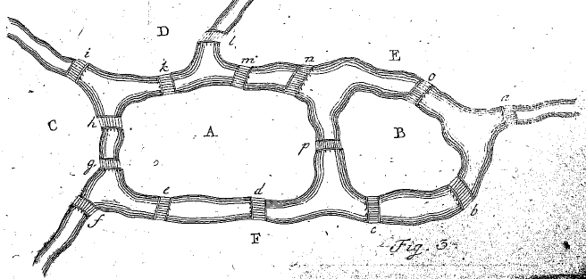

One of the oldest problems in graph theory concerns the Eastern Prussia old city of Königsberg. In that city was an island around which the river Pregel flowed in two branches. Seven bridges crossed the river to enable people to cross between mainland and island. A drawing of the river, bridges and island is shown below.

At some point the question of whether it was possible to devise a tour of the city to cross every one of the bridges once and once only was raised. In 1736, Euler showed that no such route is possible.
Euler explained his solution in Euler (1741) which has been translated in the first chapter of Biggs, Lloyd, and Wilson (1986) . The original version “Solutio Problematis Ad Geometriam Situs Pertinentis” is available for download from the MAA Euler Archive.
The goal of this post is to reproduce some ideas from Euler’s paper in computer language, specifically for the Maxima computer algebra system. We describe an implementation of multigraphs in Maxima and an approach to deciding whether a path in a multigraph is an Euler path or not. In a future post we will revisit this topic and discuss searching multigraphs for Euler paths.
Multigraphs in Maxima
Maxima comes with a module for working with graphs. Unfortunately, the Maxima graphs module requires graphs to be simple, having no parallel edges and no loops. The graph which arises in the Königsberg bridges problem, however, is not simple.
One way to represent a multigraph is as a pair \(G = (V, E)\) where \(V\) is a set of vertices and \(E\) is a set of edges. An edge ,in this context, is a pair \((e, \{u, v\})\) where \(e\) is an edge-label and \(u, v\) are the end-vertices of \(e\). This representation allows edges to have the same ends and only to differ in label. Loops in this setting would be pairs of the form \((e, u)\) or \((e, \{u\})\). As none of the graphs we consider here contain loops we ignore the added complications of allowing loops.
Maxima makes it easy to create new simple data structures. The defstruct function adds a new structure to Maxima’s list of user-defined structures. A structure in Maxima has the same syntax as a function signature. The function name becomes the name of a new structure and its arguments become fields of structures of defined with new and can then be accessed with the @ syntax.
For example, we can define a graph structure like so:
(%i) defstruct(graph(V, E))$Then a multigraph representing the bridges of Königsberg can be created like so:
(%i) konigsberg: new(graph({A,B,C,D},
{[a,{A,B}],
[b,{A,B}],
[c,{A,C}],
[d,{A,C}],
[e,{A,D}],
[f,{B,D}],
[g,{C,D}]}))$The vertices of this multigraph are the regions of land, either mainland or island:
(%i) konigsberg@V;
(%o) {A, B, C, D}The edges are bridges. The label of an edge being the label of the bridge in Euler’s diagram and the ends are the vertices (regions of land) joined by the bridge in question:
(%i) konigsberg@E;
(%o) [[a, {A, B}], [b, {A, B}], [c, {A, C}], [d, {A, C}],
[e, {A, D}], [f, {B, D}], [g, {C, D}]]To access to the ends of a specific edge use the assoc function which gives a list or set of pairs the interface of an associative structure:
(%i) assoc(a, konigsberg@E);
(%o) {A, B}Euler Paths in Maxima
A path in Biggs, Lloyd, and Wilson (1986) is defined as a sequence of vertices and edges \(v_{0},e_{1},v_{1},e_{2},v_{2},\ldots,v_{r-1},e_{r},v_{r}\) in which each edge \(e_{i}\) joins vertices \(v_{i-1}\) and \(v_{i}\) \((1\leq i\leq r)\). An Euler path is a path for which \(r = |E|\), where \(|E|\) is the size of the multigraph.
In Maxima paths (and non-paths) can be represented by lists of symbols. To distinguish those lists of symbols which truly represent a path in a graph we will have to check the defining properties of a path. Namely we have to be sure that
- every \(v_{i}\) is a vertex of \(G\),
- every \(e_{i}\) is a edge of \(G\),
- every \(e_{i}\) is an edge of \(G\) which joins vertices \(v_{i-1}\) and \(v_{i}\) of \(G\).
As the third condition subsumes the other two and as we are only concerned with correctness here and not, yet, efficiency we can ignore the first two conditions and only check the third one.
So if \(P\) is a list of symbols then \(P\) is a path of multigraph \(G\) if and only if
{P[i-1], P[i+1]} = assoc(P[i], G@E))holds for all i from 2 to (length(P) - 1)/2 [lists in Maxima being indexed from 1]. This condition expresses the fact that symbols adjacent to the ith symbol are the ends of the edge represented by that symbol in some order. Notice that this condition requires that the list has the vertex-edge-vertex structure of a path.
Now we can define a function path(G, P) that decides whether \(P\) is a path in \(G\) or not:
path(G, P):= block(
[result: true],
for i: 2 step 2 thru (length(P)-1) do (
result: result and is({P[i-1], P[i+1]} = assoc(P[i], G@E))
),
return(result)
)$With this function available, testing for Euler paths is only a matter of testing whether a path has length equal 2*length(G@E) + 1:
euler_path(G, P):= (
is(path(G, P)) and is(length(P) = 2*length(G@E) + 1)
)$As a test of this function we check that an example of an Euler path in Euler (1741) really is an Euler path. As the bridges of Königsberg multigraph has on Euler path, Euler considers a fictitious map, shown below:

He claims that \(EaFbBcFdAeFfCgAhCiDkAmEnApBoElD\) is an Euler path in this map. We can check by hand but now we can also represent the multigraph in Maxima and check using the above implementation of euler_path:
(%i) eulersberg: new(graph({A,B,C,D,E,F},
{[a,{E,F}],
[b,{B,F}],
[c,{B,F}],
[d,{A,F}],
[e,{A,F}],
[f,{C,F}],
[g,{A,C}],
[h,{A,C}],
[i,{C,D}],
[k,{A,D}],
[l,{D,E}],
[m,{A,E}],
[n,{A,E}],
[o,{B,E}],
[p,{A,B}]}))$
(%i) s: "EaFbBcFdAeFfCgAhCiDkAmEnApBoElD"
(%i) journey: map(eval_string, charlist(s))$
(%i) euler_path(eulersberg, journey);
(%o) true